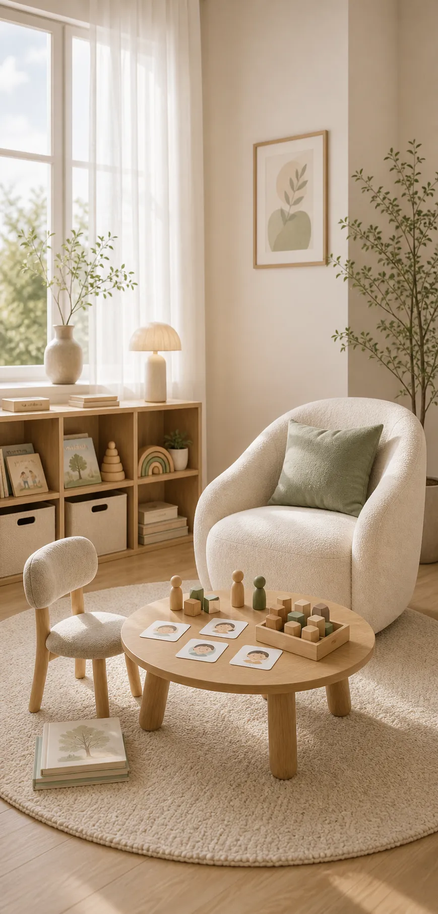
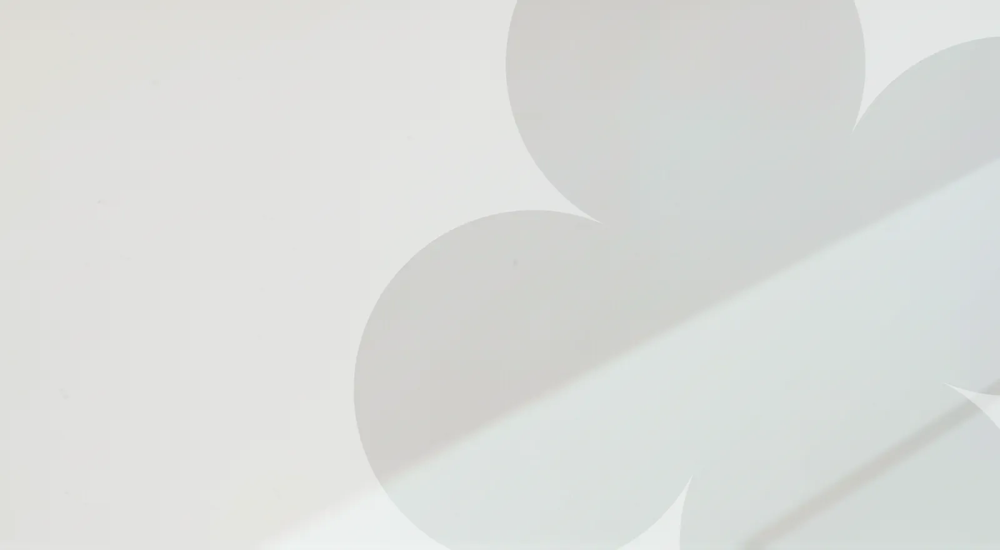

Klinik Psikolog
Selen Bulut Kapan
0–8 yaş arası çocuklar ve aileleriyle çocuk merkezli oyun terapisi, gelişim değerlendirmesi ve ebeveyn danışmanlığı alanlarında çalışıyorum. Çocuğunuzun yaşadığı zorlanmayı birlikte anlayalım ve ona uygun desteği planlayalım.
- Klinik Psikoloji yüksek lisansı
- Çocuk Merkezli Oyun Terapisi eğitimi
- 4 yıllık deneyim
Güvenli Bir Alan. Çocuğunuzun Dünyasını Birlikte Keşfedelim.
Sancaktepe ve Çekmeköy’de oyun terapisi, ebeveyn danışmanlığı ve gelişim değerlendirmesiyle çocuğunuzun duygusal gelişimini destekliyorum.
4 yıllık deneyim
Güvenli ve profesyonel bir terapi süreci sunuyorum.


0–8 yaş
Her çocuğa göre planlanan destek.
Güvenli ve gizli
Mahremiyetiniz özenle korunur.
Yüz yüze ve çevrim içi
İstanbul Anadolu Yakası’nda ya da çevrim içi.
50–60 dakika
Ortalama seans süresi.